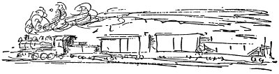
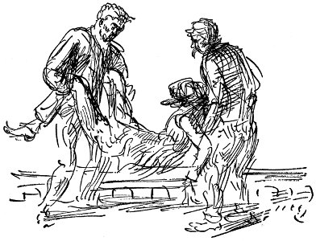
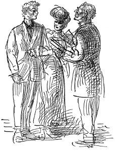

içki yüzünden yıldızları yitirdi
Ah gömmeyin beni
o yapayalnız kırlara
Gerçekleştiremediler onun ölüm duasını
Gömdüler onu yapayalnız kırlara
kolej müdürü öpüşmeye karşı
sonra cesaretimizi yine topladık, yardımın çok yaklaştığını anladığımız için yeniden bağırdık, haykırdık ama bizi duyup duymadıklarını bilmiyorduk. Sonra mühür çözüldü ve bilincimi yitirdim. Bütün gündüzler geceler geri çekildi uykuya daldım.
altman'ın yazgısı için bu gece yarısı oy verilecek
Yerin altında geçirdiğimiz dördüncü gün bu. Hiç değilse ben öyle sanıyorum ama saatlerimiz durdu. Güvenlik lambalarımızın balmumunu yediğimiz için karanlıkta bekliyordum. Bir parça tütün, ağaç kabuğu ve pabuçlarımın birazını da yedim. Ama yalnızca çiğneyebildim. Umarım bunu okuyabilirsin. Ölmekten korkmuyorum. Meryem Ana acısın bana. Sanırım, öleceğim an geldi. Malımın mülkümün ne olduğunu biliyorsun. Onları edinmek için birlikte çalıştık, hepsi şimdi senindir. Bu benim vasiyetim, yerine getirmelisin. Çok iyi bir eş oldun bana. Meryem Ana seni korusun. Umarım bu bir gün eline geçer, okuyabilirsin. Burada her şey çok sessiz, yoldaşlarımıza ne olduğunu merak ediyorum. Cennette yine bir araya gelinceye kadar hoşça kal.
kızlara sarkıntılık eden biri halk önünde
kırbaçlandı devekuşlarına özendi
Üçe altı küçücük bir kutuda
Çürüyor şimdi kemikleri yapayalnız kırlarda
Mac
Mac, yük katarına atlama fırsatı yakalamak için bahçelerin ötesindeki su tankının yanına gitti, yaşlı adamın şapkası, paramparça pabuçları tozdan grileşmişti. Başını dizlerinin arasına sokmuş, iki büklüm oturuyordu. Mac burnunun dibine yaklaşana kadar kıpırdamadı. Yanına oturdu Mac. Yaşlı adamdan ateşli hastaların ekşi ter kokusu yükseliyordu. “Derdin nedir, babalık?”
“İşim bitik, hepsi bu . . . hep veremliydim zaten, şimdi de sonum geldi galiba.” Bir kasılmayla ağzı çarpıldı. Başı yeniden dizlerinin arasına düştü. Ölmek üzere olan balık gibi ağzından küçük, güçsüz soluklar alarak yine başını kaldırdı bir dakika sonra. Soluğunu toplayınca, “Her seferinde sanki jiletle ciğerlerimi kesiyorlar . . . Yanımdan ayrılma ne olur, evlat!” dedi.
“Elbette ayrılmam,” dedi Mac.
“Dinle evlat, Batı'ya ağaçların falan olduğu yerlere gitmek istiyorum . . . Şu vagonlardan birine binmeme yardım etmelisin. Trenin altına tutunmaya gücüm yetmez . . . Yatmama izin verme . . . Yatarsam hemen kan gelir, anlıyorsun ya.” Yine tıkandı.
“Birkaç kuruşum var. Belki frencinin ağzını kapayabiliriz.”
“Sen serseriye benzemiyorsun.”
“Matbaacıyım. Elimden geldiğince çabuk San Francisco'ya gitmek istiyorum.”
“İşçisin sen, orospu çocuğuyum. Dinle şimdi, evlat . . . ben on yedi yıldır çalışmadım.”
Tren geldi, makine gıcırtılarla su tankının yanında durdu.

Mac, yaşlı adamın ayağa kalkmasına yardım edip onu üzeri katranlı muşambalarla örtülü makine parçaları dolu vagonun köşesine yerleştirdi. Ateşçiyle makinistin kendilerine baktığını gördü, ama adamlar seslerini çıkarmadılar.
Tren kalktığında rüzgâr zehir gibiydi. Mac, paltosunu çıkarıp trenin sarsıntısı yüzünden sallanmasın diye yaşlı adamın başının altına koydu, gözleri kapalı, başı arkaya düşmüş oturuyordu ihtiyar. Mac onun ölmüş olup olmadığını anlayamıyordu. Akşam çökmüştü mutlaka. Korkunç üşüyordu, vagonun öteki ucunda bir katranlı muşamba parçasına titreyerek sarındı Mac.
Şafağın griliğinde, daldığı hafif uykudan çeneleri birbirine çarparak uyandı. Tren yan hatta durmuştu. Bacakları öylesine uyuşmuştu ki bir süre basamadı. Yaşlı adama bakmaya gitti, ama ölmüş olup olmadığını anlayamadı. Ortalık biraz daha aydınlanmış, ocaktaki demir parçasının kenarı gibi parıldamaya başlamıştı doğu yöresi. Mac, yere atlayıp geri dönerek demiryolu işçilerinin kaldığı vagona yürüdü tren boyunca.

Frenci, lambanın yanında kestiriyordu. Mac, yük vagonlarından birinde yaşlı bir adamın ölmekte olduğunu söyledi. Duvardaki çiviye asılı iyi giysisinde bir şişe viskisi vardı frencinin. Birlikte geri döndüler. Vagona vardıklarında neredeyse gün doğmuştu. Yaşlı adam yana devrilmişti. Bir İç Savaş generalinin heykeli kadar beyazdı, ciddiydi yüzü. Mac onun paltosunu, pis, paçavralaşmış gömleğini, iç çamaşırlarını açtı, elini göğsüne soktu. Tahta parçası gibi soğuk ve cansızdı. Elini çektiğinde üzerinde yapış yapış kan vardı.
Ağzını kayıtsızca şaklatarak, “Kanama,” dedi frenci.
Cesedi trenden çıkarmaları gerektiğini de söyledi. Şapkasını yüzüne örterek onu travers çakıllarının yanındaki bir çukura yatırdılar. Mac, gömebilmeleri için, şahinlere yem olmasın diye gömebilmeleri için kürekleri olup olmadığını sordu, ama frenci, hayır, dedi, demiryolu bekçileri bulup gömerlerdi. Mac'ı kendi vagonlarına götürüp içki verdi, yaşlı adamın nasıl öldüğünü bir kez daha baştan anlattırdı.

Mac San Francisco'ya vardı.
Maisie başlarda soğuktu, kırgındı, ama biraz konuştuktan sonra Mac'ın zayıflamış, serseri gibi kılıksızlaşmaya başlamış olduğunu söyleyerek gözyaşlarına boğuldu, öptü onu. Gidip biriktirdiği paraları bankadan çektiler, Mac'a yeni giysi aldılar, kızın anasıyla babasına hiçbir şey söylemeden evlendiler. Trenle San Diego'ya giderken çok mutluydular, orada mutfaktan da yararlanabilecekleri döşenmiş bir oda tuttular, ev sahibine de bir yıldır evli olduklarını anlattılar. Oradan Maisie'nin anasıyla babasına telgraf çekip balaylarını geçirdiklerini, kısa sürede geri döneceklerini bildirdiler.
Mac, matbaada iş buldu. Pacific Beach'te bir küçük ev almak için taksit ödemeye başladılar, iş kötü değildi. Maisie'yle geçirdiği sakin hayatta oldukça mutluydu. Her neyse, yeterince serserilik yapmıştı bir süre. Maisie, bebeği doğurmak için hastaneye yattığında, Mac, patronu Ed Balderston'dan iki aylığını peşin olarak çekti. Buna karşın doktorun parasını ödemek için evi ikinci kez ipotek ettirmek zorunda kaldılar. Bebek kızdı, mavi gözleri vardı, adını Rose koydular.
San Diego'da hayat güneşliydi, sessizdi. Mac sabahları buharlı arabayla işe gidiyor, akşamları buharlı arabayla geri geliyordu. Pazar günleri ya evde ufak tefek işler yapıyor ya da bazen Maisie ve bebekle plajlardan birinde vakit geçiriyordu. Şimdi sanki aralarındaki sessiz anlaşma gereği, evlenmeden önce çektirdiği tüm acılar için Mac onun her istediğini yapmak zorundaydı. Ertesi yıl bir çocukları daha oldu, doğumdan sonra Maisie hastalanıp uzun süre hastanede kaldı. Bu yüzden de Mac, artık haftalığını alır almaz yalnızca borçlarının faizlerini ödeyebiliyor, hesaplarını kapatmasınlar diye bakkalla, sütçüyle, fırıncıyla haftadan haftaya kaçamaklı konuşmalar yapmak zorunda kalıyordu. Maisie boyuna dergiler okuyor, durmadan eve yeni şeyler, örneğin mekanik piyano, yeni buz kütüğü, alevsiz ocak istiyordu. Erkek kardeşleri, Los Angeles'ta emlakçılık işinden iyi para kazanıyorlar, anasıyla babası da durumlarını düzeltiyorlardı. Ne zaman onlardan mektup alsa, parasını artırması için patronuna baskı yapsın ya da daha iyi bir işe geçsin diye Mac'ın başının etini yiyordu.
Kentte, yoksul düşmüş bir devrimci bulunduğunda ya da grev fonu için para topladıklarında Mac, birkaç dolar vererek onlara yardım ederdi, ama Maisie'nin anlayacağı korkusuyla hiçbir zaman fazla bir şey yapamazdı. Evde ne zaman Akla Çağrı ya da başka radikal gazete bulsa, hemen yakar, sonra da kavga ederler, surat asarlar, birkaç gün birbirlerinin dünyasını zindana çevirirlerdi. Sonunda Mac, bunların hiçbir işe yaramayacağına karar verip bu konularda onunla konuşmaz oldu. Ama, Mac bir başka kadınla geziyormuş gibi aralarını açıyordu bu.